Melhores cidades do estado de São Paulo
Bem-vindo ao meu site incrível, onde você vai descobrir as 10 melhores cidades para se morar no estado de São Paulo! Aqui, você vai encontrar um panorama das cidades mais bacanas, que estão sempre em desenvolvimento e oferecendo lugares lindos para viver e aproveitar a vida.
Destaque especial para a cidade de Osasco, onde mora o meu professor a lenda o incrível, Jailson, que me inspirou a criar este site e a realizar todas essas pesquisas. A cidade tem um charme todo especial e vale a pena ser mencionado, como os hot dogs da região.
Então, fique à vontade para explorar e descobrir qual dessas cidades pode ser o seu próximo lar ou apenas um lugar legal para visitar. Marcha!
São Paulo
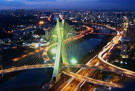 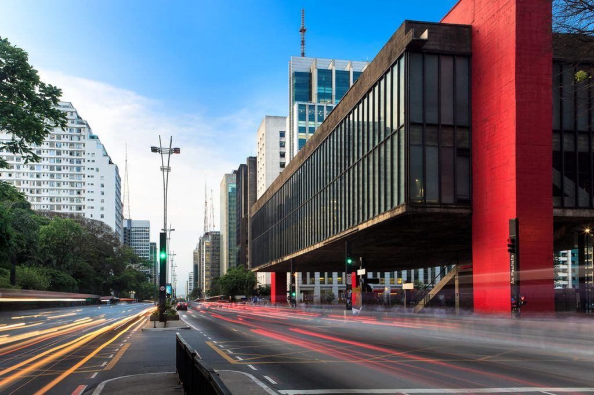São Paulo é a maior e mais influente cidade do Brasil, conhecida por sua enorme diversidade cultural, economia robusta e vida urbana dinâmica. Como um centro financeiro global, a cidade oferece uma vibrante cena cultural e uma infinidade de opções gastronômicas e de entretenimento, refletindo sua grandeza e complexidade.
Barueri é um importante polo empresarial e tecnológico na região metropolitana de São Paulo. Com uma infraestrutura moderna e um setor corporativo em expansão, a cidade também é conhecida por sua qualidade de vida e áreas verdes, como o Parque Municipal
Santos
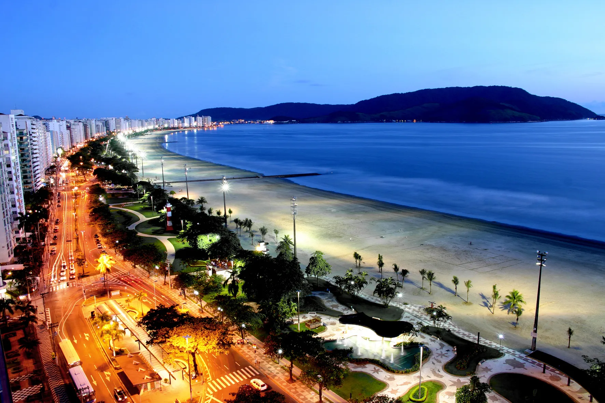 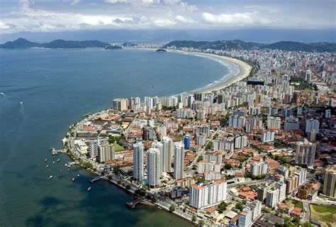Santos, situada no litoral paulista, é famosa pelo seu porto, um dos mais movimentados do Brasil, e por suas belas praias e calçadão. A cidade combina sua importância econômica com uma rica oferta cultural e um ambiente praiano atraente.
Jaguariúna
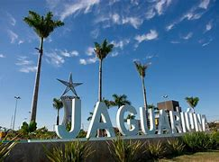 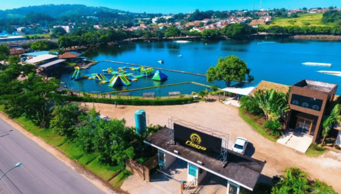Jaguariúna é conhecida por seu rodeio tradicional e por sua crescente infraestrutura urbana. Situada no interior paulista, a cidade equilibra charme rural com desenvolvimento moderno e é um ponto de encontro para eventos culturais e festivais.
Campinas
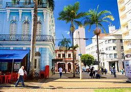Campinas é um importante centro educacional e tecnológico no interior de São Paulo, abrigando instituições renomadas como a UNICAMP. A cidade oferece uma vida cultural rica e uma infraestrutura bem desenvolvida, refletindo seu papel significativo na inovação e educação.
São Caetano do Sul


São Caetano do Sul é destacada por sua alta qualidade de vida e desenvolvimento industrial. Parte da Região do Grande ABC, a cidade possui uma excelente infraestrutura urbana e serviços, combinando bem-estar com um ambiente empresarial dinâmico.
Jundiaí
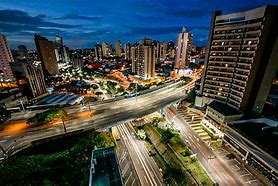 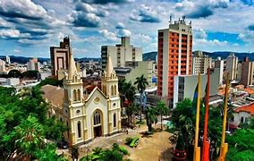Jundiaí é uma cidade estratégica no interior paulista, conhecida por seu papel no setor logístico e comercial. Com um desenvolvimento urbano planejado e uma rica oferta de serviços, Jundiaí é um importante ponto de conexão e um centro regional em crescimento.
Santana de Parnaíba


Santana de Parnaíba é notável por seu centro histórico bem preservado e seu desenvolvimento moderno. Localizada na região metropolitana de São Paulo, a cidade combina o charme histórico com uma infraestrutura urbana crescente, criando um ambiente único.
Sorocaba
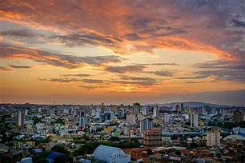 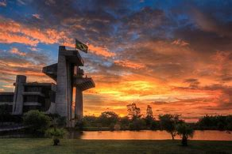Sorocaba é um importante centro regional com uma economia diversificada e uma rica vida cultural. A cidade investe em infraestrutura e qualidade de vida, oferecendo uma ampla gama de oportunidades comerciais e culturais para seus habitantes.
Ribeirão preto


Ribeirão Preto é conhecida por sua forte tradição agrícola e setor de saúde. No interior paulista, a cidade combina seu papel de destaque na produção agrícola com uma rica oferta cultural e uma infraestrutura moderna, tornando-se um centro regional importante.